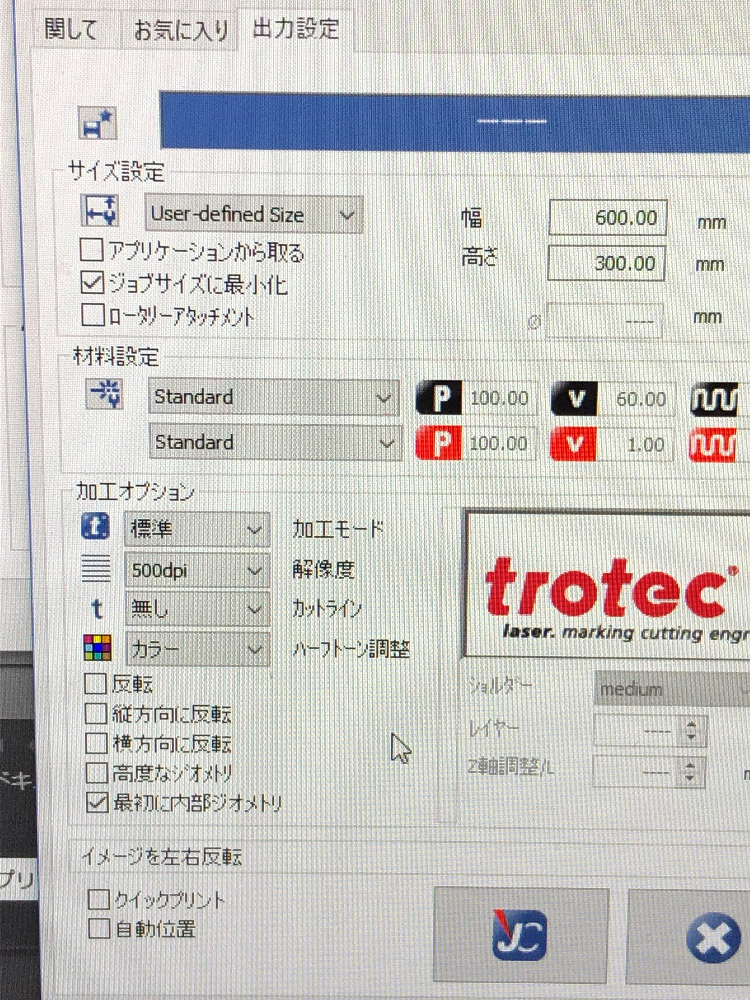
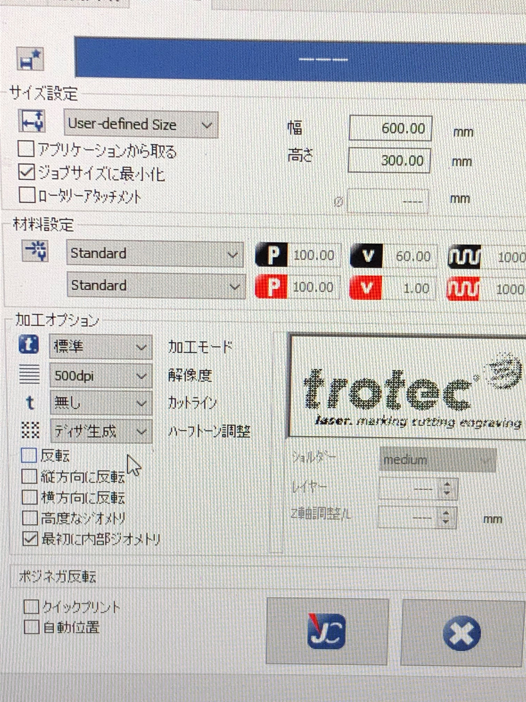
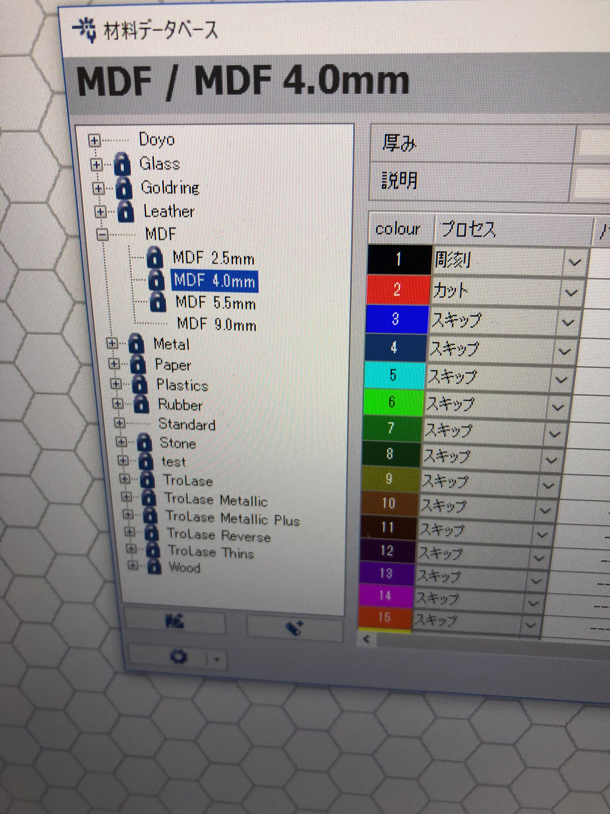

レーザーカッター画像のプリント方法
下の欄プリント（U）を選択

詳細設定を選択

1.カラーの欄を選択

2.カラー→ディザ生成

JCを押して保存

3.プリントだああああああああああああ
＊これは画像の明暗から線を抽出レーザーの速度にとっては線が薄い
線を濃くしたい場合
１．5角形のところをダブルクリック
２．材料データベースの欄に注目！！

* MDFの欄は材料の厚みに対した彫刻、カットのステータスになる
３．Standardを選択→さらにStandardを選択

４．プロセスの欄に注目！！
５．レーザーのスピードをを落とすことによりレーザーのあたる時間を長く
(画像が切れていて見えませんが)
線が濃くなる！！！！
画像の光量、彩度、トーンをいじることで明暗をくっきりさせる
表層デザインに使えるのではないでしょうか